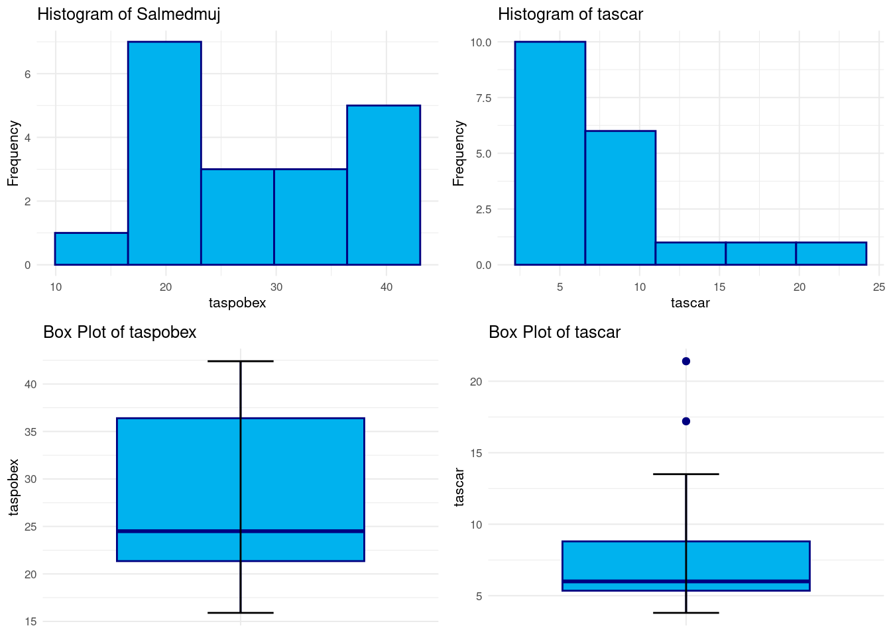
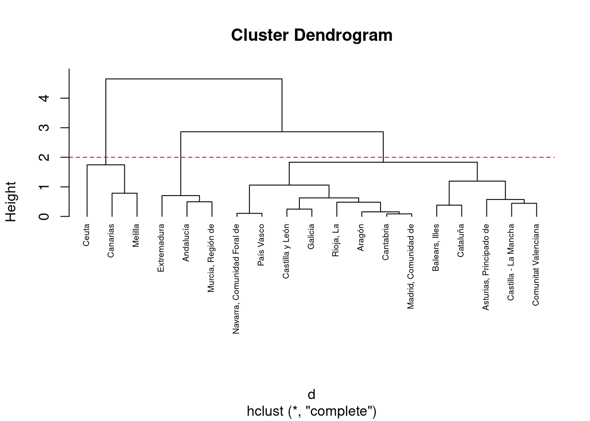
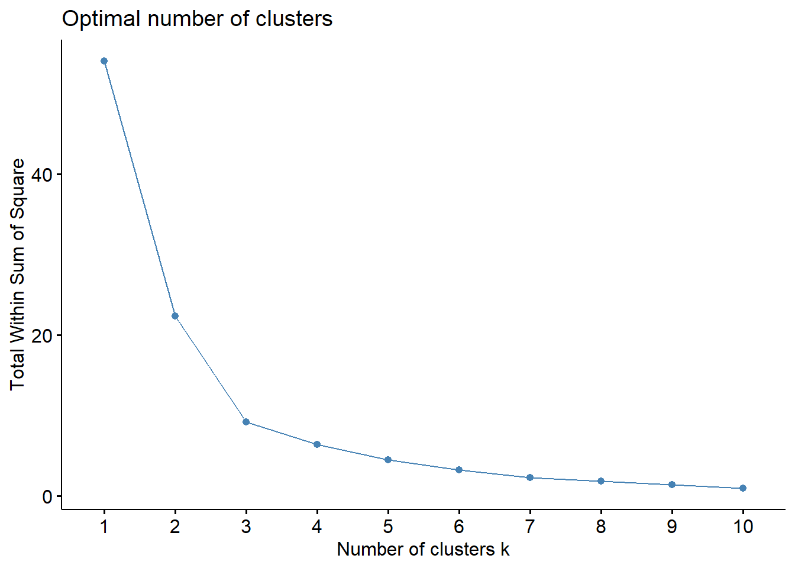
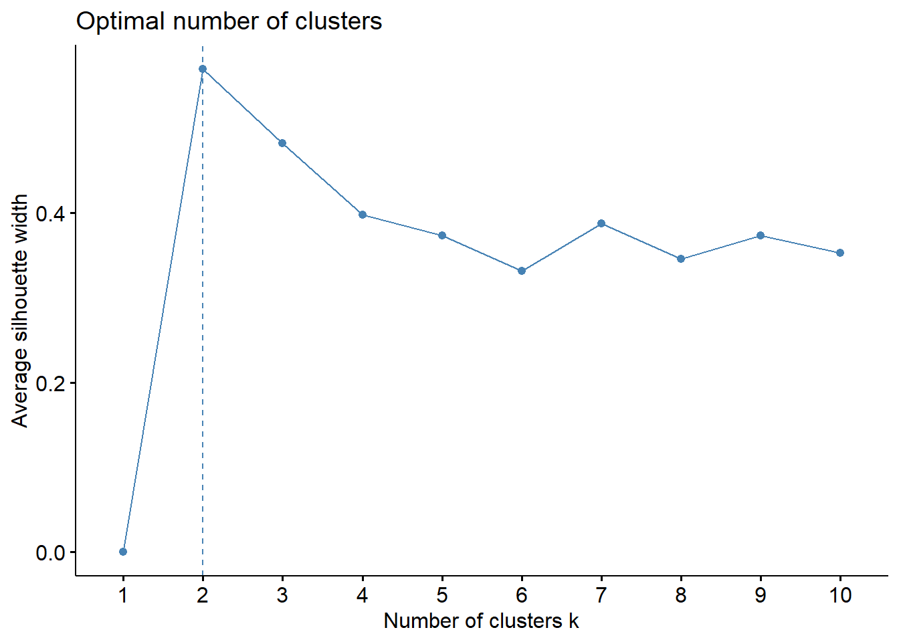
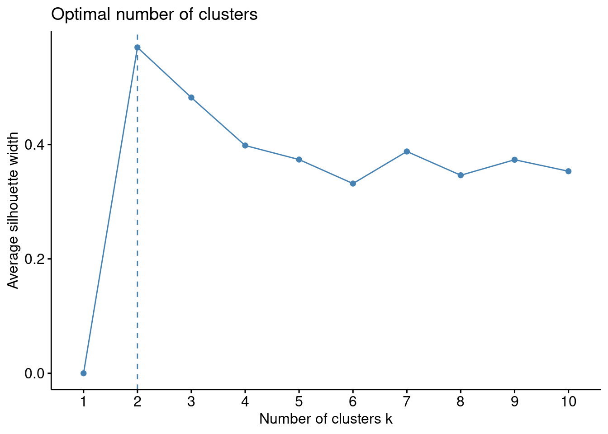
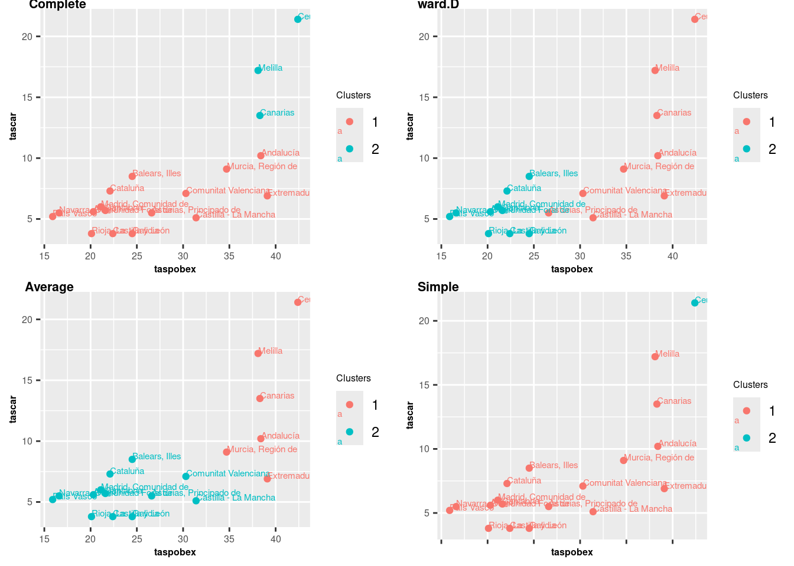

# Librerías
library(readxl) # Para leer los excels
library(dendextend) # Para dendogramas
library(dplyr) # Para tratamiento de dataframes
library(ggplot2) # Nice plots
library(stats) # hclust package
library(factoextra) # fviz_cluster function
library(gridExtra) # layout de los gráficosCluster Jerárquico: ecv_cluster
Introducción
En este notebook se expondrá como llevar a cabo un Análisis Cluster de tipo Jerárquico a partir de un conjunto de datos, explicando los fundamentos teóricos en el que se basa para agrupar los datos.
dataset
En este cuaderno vamos a analizar el dataset llamado ecv_cluster.xlsx. Este contiene datos por Comunidades Autónomas sobre la tasa de riesgo de pobreza, la carencia material o la situación laboral que encontramos dentro de la Encuesta de Condiciones de Vida (ECV). Datos correspondientes al año 2021. Las variables de interés son las siguientes:
- CCAA: Comunidades Autónomas
- taspobex: Tasa de riesgo de pobreza o exclusión social (indicador AROPE).
- taspob: Tasa en riesgo de pobreza (renta año anterior a la entrevista).
- tascar: Tasa personas con carencia material severa.
- tasvivtrab: Tasa de hogares viviendo con baja intensidad en el trabajo (de 0 a 59 años).
El objetivo de este estudio será aplicar un Análisis Cluster para hacer grupos de comunidades autónomas en función de las variables definidas arriba. Concretamente usaremos un cluster jerárquico.
Descripción del trabajo a realizar
Se pretende hacer un Análisis Cluster empleando el procedimiento Cluster Jerárquico de las CCAA en función a las variables taspobex y tascar .
- Hacer un análisis exploratorio.Ver si hay NA’s y si es necesario escalar los datos.
- Variables sobre las que se buscan cluster (taspobex, tascar).
- Estandarizar datos y probar cluster jerárquico con k=3.
- Elegir Función Distancia y Método de Enlace (o comparar varias).
- Interpretar resultados.
- Ver métodos Elbow y Silhouette si hay otro número óptimo de clusters y en ese caso repetir el estudio.
Análisis Exploratorio (EDA)
EDA viene del Inglés Exploratory Data Analysis y son los pasos relativos en los que se exploran las variables para tener una idea de que forma toma el dataset.
Cargar Librerías
Lo primero de todo vamos a cargar las librerías necesarias para ejecutar el resto del código del trabajo:
Lectura de datos
Ahora cargamos los datos del excel correspondientes a la pestaña “Datos” y vemos si hay algún NA o algún valor igual a 0 en nuestro dataset. Vemos que no han ningún NA (missing value) en el dataset luego no será necesario realizar ninguna técnica para imputar los missing values o borrar observaciones.
datos <- read_excel("../../../files/ecv_cluster.xlsx", sheet = "Datos")Análisis Exploratorio (EDA1)
Lo primero de todo vamos a cargar las librearías necesarias para ejecutar el resto del código del trabajo:
# Histogram dim1
histogram <- ggplot(datos, aes(x = taspobex)) +
geom_histogram(fill = "deepskyblue2", color = "navy", bins = 5) +
labs(title = "Histogram of Salmedmuj", x = "taspobex", y = "Frequency") +
theme_minimal(base_size = 8)
# Box Plot dim1
boxplot <- ggplot(datos, aes(x = "d", y = taspobex)) +
geom_boxplot(fill = "deepskyblue2", color = "navy") +
stat_boxplot(geom = "errorbar", width = 0.2) +
labs(title = "Box Plot of taspobex", x = "", y = "taspobex") +
theme_minimal(base_size = 8) +
theme(
axis.title.x = element_blank(),
axis.text.x = element_blank(),
axis.ticks.x = element_blank()
)
# Histogram dim2
histogram2 <- ggplot(datos, aes(x = tascar)) +
geom_histogram(fill = "deepskyblue2", color = "navy", bins = 5) +
labs(title = "Histogram of tascar", x = "tascar", y = "Frequency") +
theme_minimal(base_size = 8)
# Box Plot dim2
boxplot2 <- ggplot(datos, aes(x = "d", y = tascar)) +
geom_boxplot(fill = "deepskyblue2", color = "navy") +
stat_boxplot(geom = "errorbar", width = 0.2) +
labs(title = "Box Plot of tascar", x = "", y = "tascar") +
theme_minimal(base_size = 8) +
theme(
axis.title.x = element_blank(),
axis.text.x = element_blank(),
axis.ticks.x = element_blank()
)
grid.arrange(histogram, histogram2, boxplot, boxplot2, nrow = 2, ncol = 2, widths = c(0.3, 0.3))
ifelse(sum(is.na(datos)) == 0, print("There is no NA in the dataset."), print("There is some NA in the dataset."))[1] "There is no NA in the dataset."[1] "There is no NA in the dataset."Clustering: Cluster Jerárquico
Introducción
El Análisis Cluster es una técnica de aprendizaje no supervisado que agrupa datos similares en conjuntos, llamados clusteres. El objetivo es dividir un conjunto de datos en grupos homogéneos, donde los miembros de cada grupo son más similares entre sí que con los miembros de otros grupos, según algún criterio de similitud predefinido.
Concretamente, el Cluster Jerárquico realiza estos grupos -o clusters- de manera jerárquica y ascendente, es decir que sucesivamente van fusionando grupos desde el elemento individual (mayor nivel de grupos, uno por individuo) hacia arriba.
La representación de la jerarquía de cluster se representa por medio de un dendograma, en el que las sucesivas fusiones de las ramas a los distintos niveles nos informan de las sucesivas fusiones de los grupos en grupos de superior nivel (mayor tamaño, menor homogeneidad) sucesivamente:
Los pasos concretos del Cluster Jerárquico son:
- Matriz de distancia o similitud: Se calcula una matriz que mide la distancia o similitud entre cada par de observaciones. Algunas de las medidas comunes son:
- Euclidiana: Mide la distancia más corta entre dos puntos en un espacio euclidiano. Es útil cuando las dimensiones tienen una escala similar y se desea tener en cuenta la magnitud absoluta de las diferencias.
- Manhattan (o Cityblock): Calcula la suma de las diferencias absolutas entre las coordenadas de dos puntos. Es útil cuando las dimensiones no están en la misma escala y se quiere una medida robusta a los valores atípicos.
- Gower: métrica de distancia utilizada específicamente para conjuntos de datos mixtos que contienen variables numéricas y categóricas. Esta distancia tiene en cuenta diferentes tipos de variables al calcular la similitud entre dos observaciones. Se define como una combinación ponderada de las distancias entre variables.
- Fusión de clusteres: En el enfoque aglomerativo, se fusionan gradualmente los clusteres más cercanos según la medida de distancia o similitud elegida. Esto nos lleva a la pregunta, ¿Cómo se calcula la distancia entre Clusters calcular la distancia o similitud entre clusteres en el proceso de agrupamiento jerárquico?. Existen varios métodos de enlace, destacando:
- Enlace Simple (Single Linkage): Calcula la distancia entre clusteres como la distancia más corta entre cualquier punto de un cluster y cualquier punto del otro cluster. Es sensible a la presencia de valores atípicos y al fenómeno del encadenamiento.
- Enlace Completo (Complete Linkage): Mide la distancia entre clusteres como la distancia más larga entre cualquier punto de un cluster y cualquier punto del otro cluster. Menos sensible a valores atípicos, pero puede generar clusteres de tamaño desigual.
- Enlace Promedio (Average Linkage): Calcula la distancia entre clusteres como la media de todas las distancias entre pares de puntos, uno de cada cluster. Más robusto frente a valores atípicos que el enlace simple y menos propenso al encadenamiento que el enlace completo.
- Enlace de Ward: Minimiza la varianza dentro de los clusteres al fusionarlos. Intenta minimizar la suma de cuadrados dentro de cada cluster después de la fusión.
- Representación jerárquica: Esto resulta en un dendrograma que muestra la jerarquía de agrupamiento, donde la altura en el dendrograma indica la distancia o disimilitud en la que se unen los clusteres.
El clustering jerárquico permite explorar diferentes niveles de granularidad en los datos, pero puede ser computacionalmente costoso para grandes conjuntos de datos. Es crucial elegir la medida de similitud adecuada y el método de enlace (criterio para unir clusteres, single linkage, complete linkage, average linkage,…) para obtener resultados significativos.
Modelo
Formulación
IMPORTANTE:
- El escalado es un paso esencial en la fase de preprocesamiento de datos para los algoritmos de agrupación. Garantiza que cada característica contribuya por igual al proceso de decisión del algoritmo, lo que lleva a resultados de agrupación más precisos e interpretables.
Notar que la distancia más apropiada para usar es la Euclidea ya que ambas variables son del mismo tipo, tasas, y representan el mismo fenómeno demográfico y en la misma escala (una vez hayamos escalado). En cuanto al método para hacer los clusters, vamos a dejar el que viene por defecto, el complete. Este se basa en medir la distancia entre clusteres como la distancia más larga entre cualquier punto de un cluster y cualquier punto del otro cluster. Menos sensible a valores atípicos, pero puede generar clusteres de tamaño desigual.
# Preparación de los datos
resultado <- datos[, c("taspobex", "tascar")]
resultado <- scale(resultado) # scaling/standardizing
rownames(resultado) <- datos$CCAA # Para que nos salgan luego los nombres
# Matriz de distancias
d <- dist(resultado, method = "euclidean")
# Hierarchical clustering using Complete Linkage
hc1 <- hclust(d, method = "complete")
# Plot the obtained dendrogram
plot(hc1, cex = 0.6, hang = -1)
abline(h = 2, col = "red", lty = 2)
En el dendrograma mostrado arriba, cada hoja corresponde a una observación. A medida que avanzamos en el árbol, las observaciones similares se combinan en ramas, las cuales a su vez se fusionan a una altura mayor.
La altura de la fusión, representada en el eje vertical, indica la (des) similitud entre dos observaciones. Cuanto mayor sea la altura de la fusión, menos similares son las observaciones. Es importante destacar que las conclusiones sobre la proximidad de dos observaciones solo se pueden inferir en función de la altura donde las ramas que contienen esas dos observaciones se fusionan inicialmente. No podemos usar la proximidad de dos observaciones a lo largo del eje horizontal como criterio de su similitud.
La altura del corte en el dendrograma controla el número de clusters obtenidos. Cumple el mismo papel que ‘k’ en la agrupación k-means. Para identificar subgrupos (es decir, clusters), podemos cortar el dendrograma con la función cutree. Suponer que queremos 3 clusteres:
# Cut tree into 3 groups
sub1 <- cutree(hc1, k = 3)
# Number of members in each cluster
table(sub1)sub1
1 2 3
3 13 3 Podemos añadir los clusters junto al dataframe con la función dplyr::mutate. El gráfico de puntos dibujando los clusters por colores vamos a dibujarlo para los valores originales sin escalar (ya que el escalado sólo lo hemos hecho a la hora de definir los clusters).
# Mostrar Clusters
datos %>%
mutate(cluster = sub1) %>%
select("CCAA", "taspobex", "tascar", "cluster")# A tibble: 19 × 4
CCAA taspobex tascar cluster
<chr> <dbl> <dbl> <int>
1 Andalucía 38.4 10.2 1
2 Aragón 20.3 5.6 2
3 Asturias, Principado de 26.6 5.5 2
4 Balears, Illes 24.5 8.5 2
5 Canarias 38.3 13.5 3
6 Cantabria 21.6 5.7 2
7 Castilla y León 22.4 3.8 2
8 Castilla - La Mancha 31.4 5.1 2
9 Cataluña 22.1 7.3 2
10 Comunitat Valenciana 30.3 7.1 2
11 Extremadura 39.1 6.9 1
12 Galicia 24.5 3.8 2
13 Madrid, Comunidad de 21.1 6 2
14 Murcia, Región de 34.7 9.1 1
15 Navarra, Comunidad Foral de 16.6 5.5 2
16 País Vasco 15.9 5.2 2
17 Rioja, La 20.1 3.8 2
18 Ceuta 42.4 21.4 3
19 Melilla 38.1 17.2 3# Graficamos datos diferenciando clusters
g1 <- ggplot(datos, aes(taspobex, tascar, label = CCAA)) +
geom_point(aes(colour = factor(sub1))) +
geom_text(hjust = 0, vjust = 0, size = 2, aes(colour = factor(sub1))) +
labs(colour = "Clusters")
g1
Se puede destacar lo siguiente:
Por un lado, en azul las CCAA que presentan una tasa de riesgo de pobreza y una tasa de personas con carencia material severa muy alta. Estas son Canarias, Ceuta y Melilla, lo cual cabría pensar que tiene sentido ya que ambas tres regiones contienen fuertes corrientes migratorias debido a que se encuentran en puntos fronterizos en el que hay mucha inmigración ilegal procedente de países como Marruecos. Esta población es más propensa a prior a sufrir pobreza y carencia material debido a su situación precaria e irregular.
En rojo se encuentran las CCAA que presentan una tasa de riesgo de pobreza similares a las anteriores pero la de personas con carencia material alta no es tan grande como en las citadas anteriormente. Estas son Andalucía, Murcia y Extremadura, que efectivamente es común que aparezcan en la prensa anualmente como regiones con más pobreza dentro de España (a excepción de Murica) y sin embargo presentan una tasa de personas con carencia material no tan alta como las anteriores puesto que no hay tanta población en situación irregular que pueda derivar en una carencia material sustancial.
Por último, en verde encontramos el resto de CCAA que tienen valores más razonables para ambos indicadores.
Número Clusters Óptimo
Encontrar el número óptimo de clusters implica identificar la cantidad ideal de grupos en los que se pueden dividir los datos de manera significativa y coherente. Es crucial porque determina la calidad y utilidad de los resultados del análisis de agrupamiento.
En este apartado revisaremos si el número de clusters que hemos seleccionado anteriormente (3) es el óptimo, y de lo contrario haremos de nuevo el análisis con el número que se obtenga.
Método Elbow
Una de las formas comunes de determinar este número es a través del método del codo o elbow en inglés. Este método busca identificar el punto donde la adición de más clusters ya no proporciona un beneficio significativo en la varianza explicada o la cohesión dentro de los grupos.
Al representar la variación explicada en función del número de clusters, observamos un gráfico que se asemeja a la forma de un codo. A medida que aumentamos el número de clusters, la varianza explicada tiende a disminuir. El punto en el que esta disminución se estabiliza o se aplana marca el número óptimo de clusters, indicando un equilibrio entre una mayor partición (más clusters) y una adecuada interpretabilidad de los grupos.
# Método Elbow
set.seed(785248)
factoextra::fviz_nbclust(resultado, hcut, method = "wss")
En el gráfico proporcionado, buscamos el “codo” del gráfico, que es el punto donde la suma total de cuadrados dentro de los clusters (total within-cluster sum of squares) deja de decrecer significativamente con la adición de más clusters.
Observando el gráfico, el punto de inflexión más claro se encuentra en k = 2. Aquí es donde la disminución en la suma de cuadrados empieza a ser menos pronunciada en comparación con la disminución entre 1 y 2 clusters. De todos modos, también podría parecer razonable tomar el 3. Es por ello que vamos a usar algún método adicional.
Método Silhouette
El método Silhouette es una técnica utilizada para determinar la calidad de la agrupación en un conjunto de datos. Consiste en calcular el valor de la silueta para cada punto de datos, que mide qué tan similar es un punto a su propio grupo (cohesión) en comparación con otros grupos vecinos (separación).
El proceso implica:
Cálculo de la silueta individual: Para cada punto de datos, se calcula la silueta, que es la diferencia entre la distancia media intra-cluster (distancia al resto de puntos en su mismo grupo) y la distancia media al cluster más cercano (distancia a los puntos del grupo más próximo, excluyendo el propio grupo).
Valor de la silueta global: Se obtiene el promedio de las siluetas individuales de todos los puntos de datos en el conjunto. Contra más cercano a 1, mejor formado estará el cluster.
La siguiente función generará un gráfico que muestra los valores de Silhouette en función del número de clusters. El número óptimo de clusters es típicamente aquel que maximiza el valor de Silhouette, representando una mejor cohesión intra-cluster y separación inter-cluster.
# Método Silhouette
set.seed(785248)
factoextra::fviz_nbclust(resultado, hcut, method = "silhouette")
Este método nos reafirma que el número óptimo es 2 puesto que es el caso cuyos clusters maximiza el valor de Silhouette, representando una mejor cohesión intra-cluster y separación inter-cluster. No obstante, k=3 también presenta valores muy altos luego también podría ser una buena elección.
NOTA: Ahora vamos repetir el estudio anterior con el número de clusters igual a 2 e intentar analizar de nuevo los resultados.
Vamos a utilizar en todos casos la distancia euclídea como ya se ha razonado antes y vamos a usar diferentes métodos de Fusión de Clusters para ver si obtenemos resultados significativos.
# For Complete method
hc1 <- hclust(d, method = "complete")
sub1 <- cutree(hc1, k = 2)
# Ward.D method
hc2 <- hclust(d, method = "ward.D")
sub2 <- cutree(hc2, k = 2)
# Average method
hc3 <- hclust(d, method = "average")
sub3 <- cutree(hc3, k = 2)
# Single method
hc4 <- hclust(d, method = "single")
sub4 <- cutree(hc4, k = 2)
Notar que en todos casos hemos obtenido (a excepción de con simple) distribuciones similares en los clusters, que viene siendo lo mismo que en el caso de k=3 clusters pero agrupando los dos primeros clusters que habíamos visto. Es por ello que los resultados parecen coherentes.
Conclusión
Aquí se han explicado los supuestos del cluster jerárquico con un dataset en el que se han creado clusters de CCAA según tasa de riesgo de pobreza y la carencia material. La evidencia nos ha mostrado que se tiende agrupar las comunidades con incidencias más altas por un lado y más bajas por otro.
Bibliografía
Footnotes
EDA viene del Inglés Exploratory Data Analysis y son los pasos relativos en los que se exploran las variables para tener una idea de que forma toma el dataset.↩︎